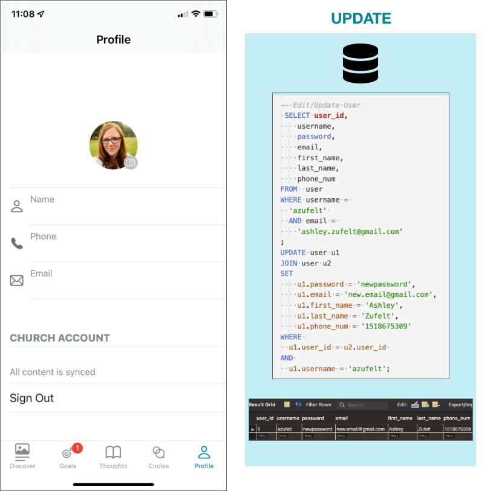

This link gives a fantastic view of the application, as the user walks through, step by step. You can click through as you follow along with the -> steps listed above.
Or, you can also view the images individually on these slides ->

ERD
Reflect:
Over-all I'm extremely happy with where I got with the project. I of course have so much more to learn about how powerful databases are, but I'm off to a really good start, and have an excellent foundational understanding of what it takes to design and build a database.
Some pieces that I learned and will take with me was the ability to decrease how much data I store in a table, but then join it with another table to actually produce data results or authentication that is needed. This is also a piece I struggled with, because I WANTED to be able to store everything that I needed in a view in one table so I could esily get to all of the things. But that doesn't allow for scalability, good maintenance pracices, as well as can really limit and even further complicate how statistics get drawn from the tables.
This database design project may be done, but I intend to flesh this out further and take it to production, either with the integrated circles use, or for some other various platforms.